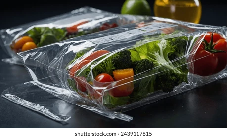

Detailed Information
Food Preservative
Food preservatives are substances used to extend the shelf life of products by inhibiting the growth of bacteria, fungi, or other microorganisms. Common preservatives include sodium benzoate, ascorbic acid, and potassium sorbate, which maintain the safety and quality of food products. Natural alternatives, such as rosemary extract and vinegar, are gaining popularity for health-conscious consumers.
Packaging Type
Packaging types vary to ensure the safety and integrity of the product. For instance, vacuum-sealed packaging removes air to prevent spoilage, while plastic containers are ideal for convenience and durability. Glass jars, often used for preserves and sauces, provide a recyclable option that protects flavor and texture.
Food Condition
The condition of the food defines its state at the time of packaging. For example, fresh foods are packaged immediately after harvesting to retain nutrients, while frozen items are stored at sub-zero temperatures to preserve them for extended periods. Canned and vacuum-packed goods offer long shelf life and are ideal for emergency storage.